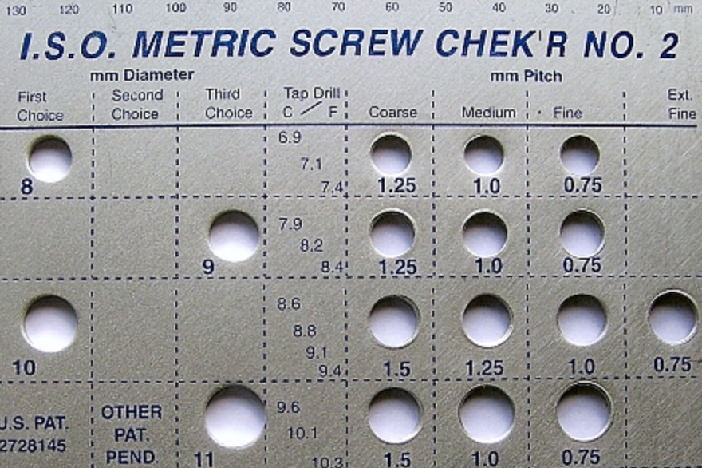

{kind=link}
The Therac-25
A safety interlock removed in software, and the overdoses that followed.
Read case study →Guiding questionWhat is the role of a designer in innovative and continuous product development?
Everything a designer makes goes on existing in the world afterwards, doing things the designer may not have intended, to people who never agreed to any of it. That is the uncomfortable premise of Topic C, and C1.1 states it most directly. Design is not a neutral activity. Choosing what to make, for whom, and out of what is a series of ethical decisions that happen to be dressed up as technical ones.
Planned obsolescence is the objective most likely to start an argument in class, and it should. It is easy to treat as straightforward villainy, and sometimes it is, but the honest version is more complicated. Products do wear out, technologies do improve, and a designer choosing a five-year service life over a twenty-year one may be responding to genuine constraints rather than plotting against the customer. Learn to tell those cases apart and to argue the distinction, because "companies are greedy" is not an analysis and will not earn you marks. Safety standardisation in 1.1.2 is the quieter half of this topic and the one with the most visible consequences, since standards are mostly written in response to somebody having already been hurt.
Students must be able toOutline how design decisions have resulted in products that have had significant positive or negative impacts on a community or on the environment's sustainability.
Designers are responsible not only to their clients (the people who commission and pay for the work) but also to the broader community and the environment. This responsibility is embedded in professional design practice and increasingly enforced through law, regulation and market expectation.
Product lifecycle thinking frames this responsibility concretely. Every product has a life from raw material extraction through manufacturing, use, and eventual end-of-life disposal or recovery. Design decisions made early (about materials, manufacturing methods, energy use, repairability and end-of-life treatment) have consequences that outlast the designer's involvement.
The Brundtland Report (1987), produced by the UN World Commission on Environment and Development, introduced the concept of sustainable development: meeting the needs of the present without compromising the ability of future generations to meet their own needs. This shifted sustainable thinking from a specialist environmental concern into a mainstream design imperative.
The Triple Bottom Line (TBL) provides a practical framework for evaluating design decisions across three dimensions:
Good design optimises all three. Poor design sacrifices two to maximise the third.
Negative examples make the stakes concrete. Minamata disease (mercury poisoning caused by a chemical factory discharging industrial waste into Minamata Bay, Japan, from the 1950s) caused severe neurological damage across an entire community and ecosystem for decades. The factory designed its process with no regard for People or Planet. Fast fashion provides a contemporary parallel: the industry contributes 8–10% of global CO₂ emissions, and 87% of textile waste goes to landfill each year.
Harmful materials such as PFAS ("forever chemicals"), used in waterproof coatings, non-stick cookware and firefighting foam, never break down naturally and accumulate in groundwater and biological tissue. Microplastics follow the same pattern. Designers who specify these materials, knowing their lifecycle consequences, bear ethical responsibility for the outcomes. Circular economy principles represent the positive counterpart: designing products from the start to be durable, repairable, modular and recoverable so that material value circulates rather than being discarded after a single use.
Microplastics are plastic fragments smaller than 5 mm, formed when larger plastic items break down through UV exposure, abrasion or washing rather than truly decomposing. Plastic does not biodegrade in any meaningful timeframe; it fragments into ever-smaller pieces that persist in soil, rivers, oceans and the air almost indefinitely.
Common sources include synthetic clothing fibres shed during washing, vehicle tyre wear, and the slow breakdown of single-use plastic packaging. Microplastics have now been detected in drinking water, food, and human blood and organ tissue, with health effects still under active research. Like PFAS, they illustrate a category of harm a designer can specify into a product (synthetic fabric, a particular packaging film) without it being visible at the point of sale.

Develop a product from concept to market and watch a corner cut early resurface as a failed safety test, a certification refusal or a recall.
Students must be able toDiscuss how standards can help designers ensure the well-being, health and safety of users when using their products.

Safety is a non-negotiable design responsibility. A product that injures its user has failed at the most fundamental level, regardless of how innovative or commercially successful it is. Ensuring safety requires more than good intentions: it requires standardisation.
Standardisation means agreeing on common rules, test procedures and specifications that apply across manufacturers, countries and industries. Standards serve three groups differently:
The historical origin of interchangeability: The Système Gribeauval (France, 1776) introduced standardised cannon components that could be repaired and replaced in the field. Honoré Blanc extended this to flintlock muskets in 1778, using standardised jigs and gauges to produce interchangeable parts. This meant that broken flint cock could be replaced from any compatible musket without a gunsmith. This was a revolutionary shift from craft production (every piece unique) to industrial standardisation (every piece identical within a tolerance).
Enforcement: Government agencies monitor compliance and can issue recalls, fines and import bans. The CPSC (Consumer Product Safety Commission) enforces standards in the United States; the ACCC (Australian Competition and Consumer Commission) does so in Australia. Failing to meet international standards means a product may be blocked at customs or rejected by retailers who face legal liability if an uncertified product injures a consumer.
A safety interlock removed in software, and the overdoses that followed.
Read case study →Students must be able toDiscuss how obsolescence (including planned, social, style, functional, technological) affects the triple bottom line (TBL) and identify products that have been impacted.
Planned obsolescence (also called built-in obsolescence) is the deliberate design of products with a limited lifespan so that consumers are forced to purchase replacements more frequently than the underlying technology would require. Four types are commonly identified:
The Veblen effect describes a related consumer behaviour: goods whose demand increases as their price rises, because high price itself signals social prestige. This is exploited in style-obsolescence cycles by luxury brands.
Triple Bottom Line impact: Planned obsolescence trades short-term corporate Profit against harm to People (financial waste, exposure to replacement products that may contain harmful materials) and Planet (increased waste, resource depletion, CO₂ from manufacturing replacements). Kaizen (the Japanese philosophy of continuous improvement through small, incremental changes) represents a responsible design counterpart: products improve over time through iteration rather than being engineered to be replaced.
In 2017, Apple admitted to throttling processor speed on older iPhones with degraded batteries, and later paid over $500 million to settle the resulting lawsuits. Apple's explanation was that this prevented unexpected shutdowns as battery chemistry aged; critics called it a disguised way to push people toward buying a new phone. Printer manufacturers embed chips in ink cartridges that stop a printer working with refilled or third-party ink, officially framed as protecting print quality, while regulators in several countries have investigated the practice as anticompetitive.
Both companies have a genuine technical justification and a strong financial incentive pointing the same direction. Does a plausible engineering reason mean a practice isn't obsolescence, even when the company also benefits financially from it? What test, something you could point to and say "this proves it either way", would actually distinguish honest engineering from obsolescence dressed up as one?
Ten questions covering the designer's ethical responsibilities, safety standards, interchangeability and planned obsolescence. Select one answer per question, then click "Check all answers" to see your score and the explanations.
Define planned obsolescence and explain two different types using product examples from the chapter.
Planned obsolescence (also called built-in obsolescence) describes the practice of designing a product so its useful life is shorter than it needs to be, pushing customers toward earlier replacement purchases than the underlying technology would otherwise demand.
1. Technological obsolescence: Smartphones that cannot update to new operating systems after a few years become obsolete even if the hardware still works. Users must buy newer models to access new software features or security updates. The product has not failed physically: it has been made incompatible by design.
2. Style obsolescence (fashion obsolescence): Shoulder pads in women's fashion were popular in the 1940s and again in the 1980s but became unfashionable afterward. A working jacket from 1985 is effectively unwearable today not because it is broken, but because it reads as visually outdated. Other examples include zoot suits (1930s–40s) and bell-bottom jeans (1960s–70s).
Explain how standardisation benefits three different groups: designers, manufacturers and consumers. Use examples from the chapter.
Designers: Standards like ASTM F963 (US toy safety) and ISO 8124 (international toy safety) provide a clear framework of safety requirements: material toxicology, flammability, small-parts hazard and mechanical abuse testing. Designers know exactly what tests their product must pass, reducing guesswork, legal risk and the chance of a dangerous oversight. Compliance is documented rather than assumed.
Manufacturers: Standardisation enables interchangeable parts. The chapter's example of bolt grade classification (strength grade stamped on every bolt head) means a factory in one country can produce components that fit those from another country, enabling global supply chains and economies of scale. This principle traces back to Honoré Blanc's system for flintlock muskets (1778), which used standardised jigs and gauges to produce components within consistent tolerances.
Consumers: Safety certification marks (CE for Europe, FCC for the United States, CCC for China) on products give consumers confidence that items from any country have been independently tested against a recognised standard. A parent buying a toy with ISO 8124 certification knows it has passed flammability and toxicity tests. Government enforcement agencies like the CPSC (US) and ACCC (Australia) back these marks with the power to issue recalls and fines, ensuring that certification is meaningful rather than decorative.
Discuss the ethical conflict a designer faces when a client asks them to use cheaper, less durable materials to increase planned obsolescence. Refer to the Triple Bottom Line (People, Planet, Profit) in your answer.
The designer faces a direct conflict between the client's focus on Profit and the designer's ethical responsibility to People and Planet.
Profit: Using cheaper, less durable materials reduces manufacturing costs and forces consumers to replace products more frequently, increasing sales volume. The client benefits financially in the short term.
Planet: Less durable goods generate more waste. Fast fashion contributes 8–10% of global CO₂ and that 87% of textile waste goes to landfill each year. Planned obsolescence also increases resource depletion, energy consumption and pollution, directly contradicting circular economy principles.
People: Consumers are harmed financially by having to replace products sooner than necessary. Cheaper materials may also contain harmful substances. PFAS, the so-called forever chemicals found in many consumer products, contaminate groundwater and cause health problems. The Minamata disease example shows how ignoring environmental responsibility harms entire communities across generations.
A responsible resolution might involve proposing modular design for easy repair, using recycled materials that reduce environmental harm, or designing for disassembly. Following Kaizen, small iterative improvements can maintain commercial viability while gradually improving durability, balancing all three TBL dimensions rather than maximising one at the expense of the others.
Describe how failure to meet international safety standards affects a product's ability to be sold globally. Use an example from the chapter.
If a product fails to meet international safety standards, it cannot legally enter many markets. Toy safety is a clear example: ASTM F963 applies in the United States and ISO 8124 internationally. A toy that passes one country's standards but fails ASTM F963 cannot legally be sold in the United States, even if it functions correctly.
Without recognised certification marks (CE for Europe, FCC for the US, CCC for China), customs officials may block imports at the border. Major retailers will refuse to stock uncertified products due to liability risk: if a child is injured by a non-compliant toy, the retailer can face legal action. The manufacturer then faces costly consequences: product redesign, retesting through accredited laboratories, recertification fees and potential permanent loss of market access to competitors who are already certified.
Government enforcement agencies such as the CPSC (US) and ACCC (Australia) can issue recalls, fines and import bans for products that reach consumers without meeting required standards. The financial and reputational damage from a public recall typically far exceeds the cost of compliance testing at the design stage.
Compare and contrast sustainable design with planned obsolescence. Refer to environmental and economic impacts in your answer, using examples from the chapter.
Sustainable design aims to minimise environmental harm through durability, repairability and recyclability. It follows circular economy principles: products are made from renewable or recycled materials, use less energy in manufacturing and can be disassembled for material recovery. Examples include reusable bags made from organic cotton and products using solar energy or biodegradable materials.
Planned obsolescence deliberately limits product lifespan to increase repeat sales. Products are designed to break quickly (functional), become technologically outdated (technological) or go out of fashion (style). Examples include the Phoebus cartel's limited-life lightbulbs, smartphones that cannot update their operating system, and fashion items like zoot suits and bell-bottom jeans.
Environmental comparison: Sustainable design reduces waste, CO₂ and resource consumption. Planned obsolescence increases all three. Fast fashion alone contributes 8–10% of global CO₂ and that 87% of textile waste goes to landfill each year. PFAS chemicals from planned-obsolescence products contaminate groundwater permanently. The Minamata disease example shows how ignoring environmental sustainability can poison communities for generations.
Economic comparison: Planned obsolescence boosts short-term corporate profits through constant replacement sales. However, consumers spend more over their lifetime and face inconvenience from frequent replacements. Sustainable design may carry higher upfront costs but saves consumers money through durability and saves society from bearing environmental cleanup costs. As markets mature, consumers tend to migrate toward more reliable and durable products, placing long-term commercial pressure on planned-obsolescence strategies.
The two approaches are fundamentally opposed in their priorities: sustainable design targets long-term planetary and consumer welfare; planned obsolescence targets short-term corporate revenue. The Veblen effect (paying more for prestige) coexists with both, but is particularly exploited in style-obsolescence cycles.
Linking Questions
Between 1985 and 1987, at least six patients receiving what should have been routine radiation therapy were given massive overdoses by a machine called the Therac-25, in some cases roughly a hundred times the intended dose. Several died from the injuries. The machine had passed every test its manufacturer had run on it.
The cause was a race condition: a specific, unlucky sequence of keystrokes, entering treatment settings and then correcting a mistake within about eight seconds, could let the machine fire its highest-power electron beam without moving a metal plate into place that was supposed to spread and weaken the beam to safe levels. Two earlier machines from the same manufacturer had the identical software bug, but a hardware interlock, a physical mechanism, stopped the beam from firing if the plate wasn't positioned correctly. The Therac-25 removed that hardware safeguard entirely and trusted the software alone to enforce it. When the bug triggered, the console displayed a cryptic message reading only "Malfunction 54," with no explanation of what had gone wrong, and operators who had grown used to frequent, harmless error codes often simply pressed the button to continue.